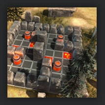
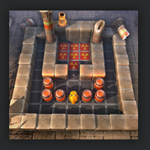
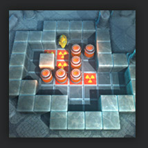
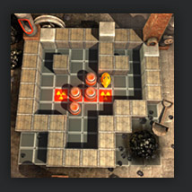
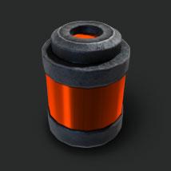
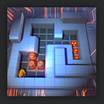
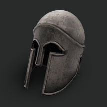

|

|
Mr. Cleaner, the Game
In a distant future, a
plan gone wrong!
During an experiment, a large amount of radioactive shells were spread through time, all around the ages. In order to save
mankind from a massive radioactivity empoisonment, a Robot is sent to
clean all this deadly substance, and bring back the shells.
This robot is called Mister Cleaner, and you
have to control it. |
Features
Mister Cleaner features 49 original Sokoban puzzles, split it 7 levels of 7 different eras that the player will travel, including the Stone Age, the Ancient Egypt, the Middle Ages or the Distant Future ...
The graphics of the game are up to the modern standards, including complex shaders and a rich lighting scheme with realtime shadows and a volumetric atmosphere rendering. Mr. Cleaner is powered by a full-featured technology to render the most beautiful experience to date in this category of puzzle games.
The audio was finely taillored as well, with 20 music tracks from various audio artists in a very large range of styles. |
|  |
The dawn of Mankind, a pre-historic era. |
|
|  |
The mysteries of the Pharao's tomb. |
|
|  |
The Ancient Greece, before the bailout. |
|
|
|  |
An history of the Industrial Revolution. |
|
|
|  |
|  |
The Electronic Future. |
|
 |
|
How to play ?
The core gameplay of Mr.Cleaner is based on a transport puzzle, also known as Sokoban, in which the player will push boxes around a closed area. In order to enhance the challenge and the game experience, some complimentary rules were added, such as bombs, portals and elevators.
Rotate CCW, CW
Move forward
Rotate camera around player
Validate/Trigger Bomb
Back to main menu |
Left, Right Arrow Keys
Up Arrow Key
CTRL+Arrow key
Space Bar
Esc |
|
Minimum hardware requirement :
NVidia GeForce series 8000 or ATI Radeon series 3000 graphics card
Intel graphic chips are more than likely to make the game crash. |